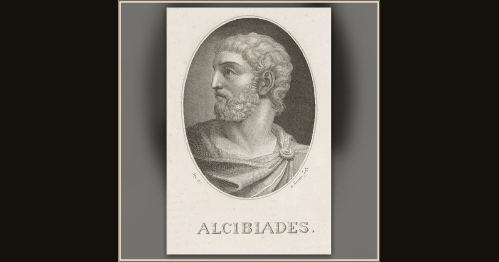

Portret van Alcibiades
Willem van Senus (mentioned on object), after drawing by Day (mentioned on object) · 1783 - 1851 · rijksmuseum
A labelled oval portrait of Alcibiades. Thucydides introduces him as a young Athenian who favored an alliance with Argos and opposed the Spartan treaty (5.43.2) Explore its place in Thucydides's History of the Peloponnesian War, Book V, chapter 178.